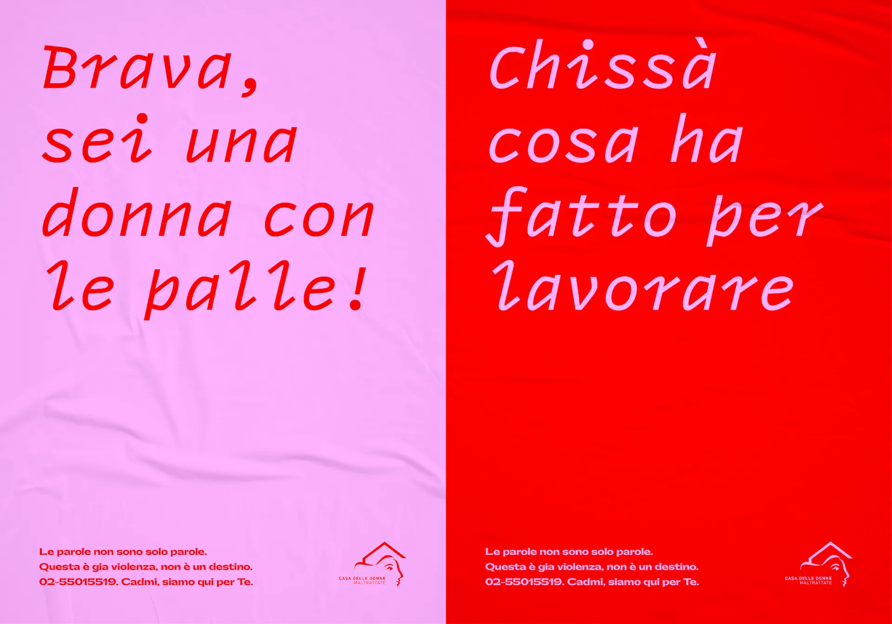
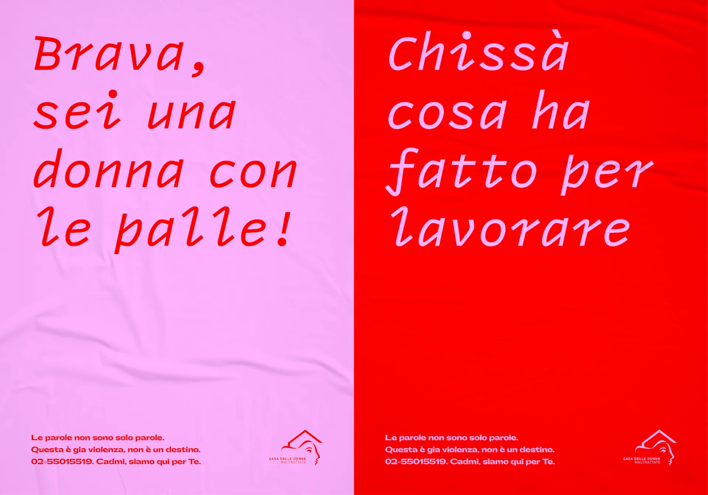

CADMI CAMPAIGN
An awareness campaign against violence against women created for the Italian Association CADMI (Casa di Accoglienza delle Donne Maltrattate)
 

The project is an alternative response to traditional manifestos against gender-based violence, where women are usually represented as victims of violence, hurt or mistreated. This kind of posters, however, aren't able to generate so much awareness around the problem both for male and female audience, but rather, they encourage people to usually look away and move on. Hence, the idea of structuring a campaign that visually focuses more on verbal violence instead of physical one. In fact, according to CADMI, verbal harassment is often one of the first warning signs regarding gender-based violence.